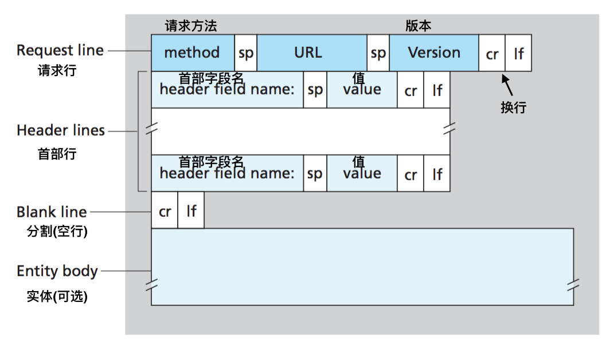
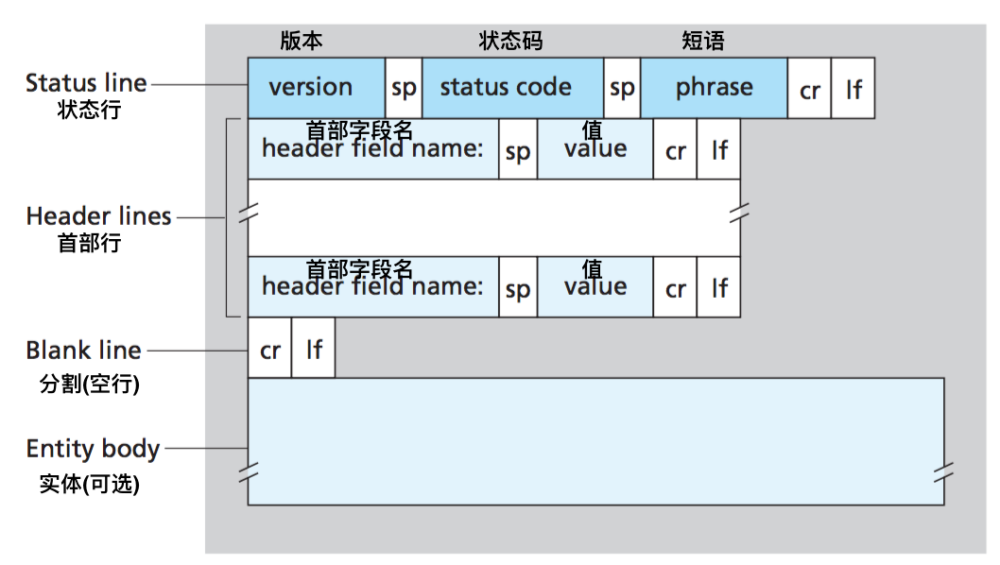
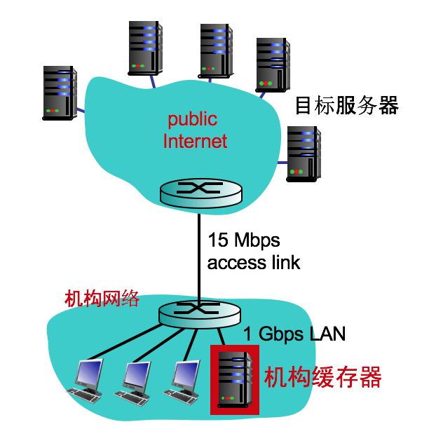
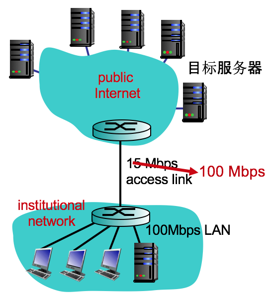
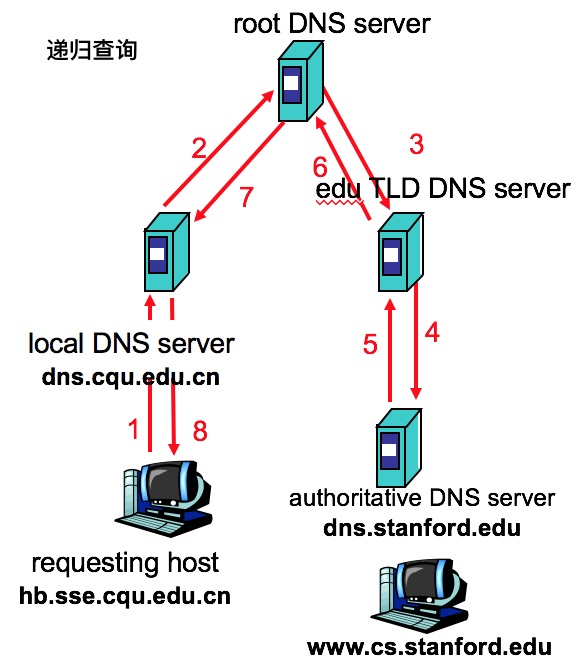
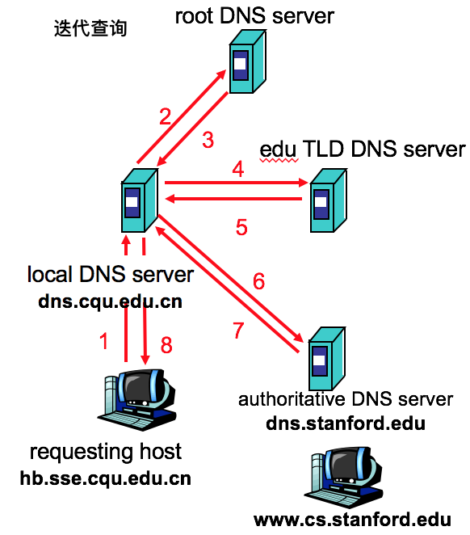
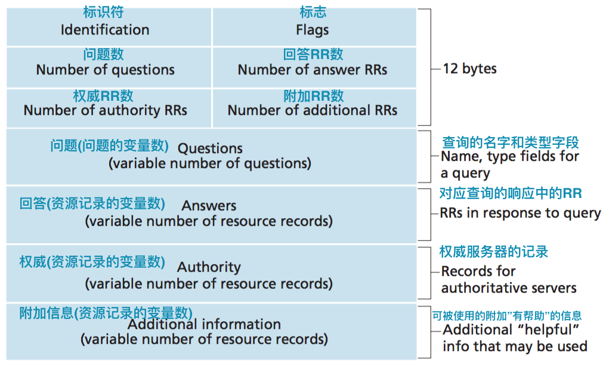
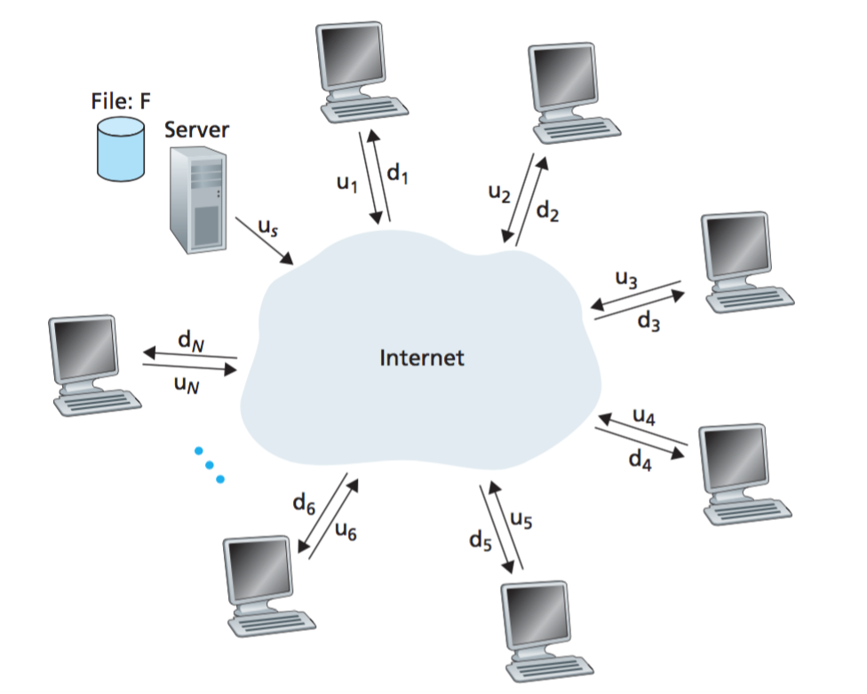
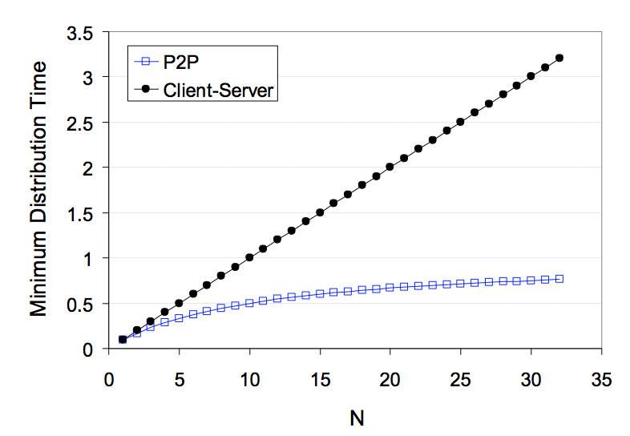

计算机网络笔记02 应用层
2.1 应用层协议原理
网络应用程序体系结构
应用程序研发很可能利用两种主流的体系结构之一:客户-服务端体系结构:
- 服务器:
- 持续地工作(365*24)
- 固定的、周知的地址(
IP地址) - 备有数据中心
- 客户端:
- 与服务器端通信
- 间歇地工作
- 可能更换地址
- 客户端不直接通信(客户总能通过该服务器的IP地址
发送分组来与其进行联系)
对等/P2P体系结构:
- 没有常开的服务器
- 任意端系统之间直接通信
- 端系统是对等的
- 具有自扩展性
- 间歇地工作
- 管理起来比较复杂
- 适用于流量密集型的应用，如文件共享、下载加速、IP电话、IPTV
进程通信P59
进程：主机上运行的程序。进程之间如何通信：
- 同一主机内部(操作系统)：
- 管道、共享内存
- 由操作系统控制
- 不同主机之间
- 主机可能安装了不同的操作系统
- 使用
套接字(Socket)机制，API - 通过网络建立通信
客户和服务器进程：发起通信的进程被标识为客户，在会话开始时等待联系的进程是服务器。
进程与计算机网络之间的接口套接字
是应用程序进程和运输层协议之间的接口, 类似于“门”的概念。通过套接字，不同端系统的进程可以进行网络通信。
由于套接字也成为应用程序和网络之间的应用程序接口/API套接字是一种软件接口(API)
进程寻址：主机由IP地址标识。目的地端口号用于标识运行在接收主机上的接收进程/接收套接字。
可供应用层使用的运输服务P61
- 可靠数据传输
- 正确：数据差错检验
- 完整：分组丢失后重传
- eg.需要可靠传输的应用：文件传输、邮件、远程访问..
吞吐量：可用吞吐量就是发送进程向接收进程交付比特的速率。- 越大当然越好
- 应用程序对吞吐量的需求不同
带宽敏感的应用：带宽敏感，具有吞吐量要求的应用程序多媒体传输弹性应用：根据情况或多或少利用可供使用的吞吐量，如电子邮件、文件传输、Web传送…- 定时/实时性：
- 保证较小的时间延迟，
- eg.因特网电话、会议
- 安全
- 数据不被非法读取、篡改、伪造等
- 提供加解密、认证、签名等机制(SSL／TLS)
- eg.电子交易、保密通信
| 应用 | 数据丢失 | 吞吐量(书上是带宽) | 时间敏感 |
|---|---|---|---|
| 文件传输 | 不能丢失 | 弹性 | no |
| 电子邮件 | 不能丢失 | 弹性 | no |
| Web文档 | 不能丢失 | 弹性 | no |
| 实时媒体 | 容忍丢失 | audio: 5kbps-1Mbps; video:10kbps-5Mbps | |
| yes, 100’s msec | |||
| 存储媒体 | 容忍丢失 | 同上 | yes, few secs |
| 交互式游戏 | 容忍丢失 | few kbps up | yes, 100’s msec |
| 即时通讯 | 不能丢失 | 弹性 | yes and no |
因特网提供的运输服务
TCP：可靠传输服务
- 保障收发进程之间的可靠传输
- 流控制: 发送速度不大于接收速度
- 拥塞控制: 对发送速度进行调节
- 分组排序、丢失重传等
- 是一种面向连接服务
- 但不能保障:
- 带宽(吞吐量)
- 最低时延
- 安全性
UDP：尽力交付服务
- 不保证收发进程的可靠传输
- 没有流控制
- 没有拥塞控制
- 没有分组排序和重传机制
- 是一种无连接服务
- 也不能保障
- 带宽(吞吐量)
- 最低时延
- 安全性
| 应用类别 | 应用层协议 | 依靠的传输协议 |
|---|---|---|
| 电子邮件 | SMTP [RFC 2821] | TCP |
| 远程访问控制 | Telnet [RFC 854] | TCP |
| Web | HTTP [RFC 2616] | TCP |
| 文件传输 | FTP [RFC 959] | TCP |
| 流式多媒体 | HTTP(如yotube) | TCP |
| 因特网电话 | SIP[RFC 3261]、RTP{RFC 3550]、或专用的(如Skype) | UDP/TCP |
应用层协议
应用层协议定义了运行在不同端系统上的应用程序进程如何相互传递报文。
- 报文类别，如：request, response
- 报文格式(语法)：报文的字段有哪些；字段描述
- 报文语义: 报文的处理方法；报文的各个字段的含义
- 报文处理规则：请求和相应时如何发送报文；处理流程
- 通用协议如何规约
- 通过RFC来定义标准化
- 允许互操作
- 非标准化的专用协议：可由开发者自己定制，如：Skype
应用层协议只是网络应用的一部分。如，Web的应用层协议为HTTP，但是Web应用的组成部分包括文档格式标准(HTML)，Web浏览器，Web服务器以及一个应用层协议HTTP。
2.2 Web和HTTP
WWW、HTTP
World Wide Web：万维网，因特网中最重要的应用HTTP：超文本传输协议，Web的应用层协议
HTTP概况
- client/server 模式
- client: 浏览器，请求，接收和， “现实” Web对象
- server: Web服务器程序，响应客户端的请求，如返回Web对象
- 依赖于TCP的传输服务:
- 客户端初始化一个TCP连接 (创建TCP套接字)到服务器端, 默认目标端口80
- 服务器端接收TCP的连接请求
- HTTP协议开始工作：客户端请求Web对象，服务器端响应
- TCP连接终止
- HTTP是“无状态”协议:
- 服务器不维持客户端的状态(历史)：不需要维护哪个客户端在什么时候做了什么
- 只要客户端请求即予以响应，来者不拒
- 维持“状态”是一件复杂的事情：要记录历史数据，并保证一致性
- 可以让应用程序来处理，如开发Web应用程序、进行会话管理、记录流程、日志etc
HTTP的两种连接方式
- 非持久性连接 HTTP/1.0：建立TCP连接后最多只能请求一个Web对象
- 浏览器并发TCP/HTTP连接
- 为每一个请求的对象建立和维护全新的连接，需要分配TCP缓冲区和保持TCP变量(负担)
- 每一个对象经受两倍往返时间rrt的交付时延
- 持久性连接 HTTP/1.1：在一个TCP连接期间可以请求多个Web对象
- HTTP/1.1默认使用的是带流水线方式的持久性连接，效率更高
HTTP的报文格式
- 报文编码：ASCII(人类可读)
- 报文类别：
- 请求报文 (客户端发送，服务器端处理)
- 响应报文 (服务器端发送，客户端处理)
请求报文

- 请求方法
- GET: 获取Web对象，扩展URL(可提交数据)，实体体为空
- POST: 提交Web表单，封装在实体数据
- HEAD: 调试
- PUT: 上传Web对象(HTTP/1.1)
- DELETE: 删除Web对象(HTTP/1.1)
- URL
- Web路径：/folder
- Web对象标识：/object.obj
- Web对象?参数：/object.obj?p1&p2
响应报文

| 状态码 | 短语 |
|---|---|
| 200 | OK 请求成功 |
| 301 | Moved Permanently 请求的对象已经被永久转移了 |
| 400 | Bad Request 一个通用差错代码，指示该请求不能被服务器理解 |
| 404 | Not Found 被请求的文档不再服务器上 |
| 505 | HTTP Version Not Supported 服务器不支持请求报文使用的HTTP协议版本 |
| 304 | Not Modified ，原来缓冲的文档还可以继续使用P77 |
用户与服务器的交互: cookie
- HTTP是无状态协议：如何让服务器知道用户先前做过什么？ Cookie
- 在HTTP请求和响应的首部行设定cookie
- 客户端保存cookies
- 服务器端通过cookie与后台数据库关联
P73 图2-10 跟踪用户状态
cookie可以在无状态的HTTP之上建立一个用户会话层，主要用于：授权，购物车，推荐，用户会话状态管理，个性化推荐
- 怎样保持状态?
- 协议：通过复杂的交互过程
- cookies：让报文内容承载状态信息
- 应用程序：如会话管理
Web缓存P74
- Web代理服务器
- 用户可以通过代理服务器访问外部网站
- 既是客户端，又是服务器
- Web缓存的作用
- 减少请求/响应时间
- 流量本地化
- 减少接入网络流量
- 更好地实现内容分发(eg.CDN)
#####实例分析：
假设：
- Web对象的平均长度: 1M bits
- 客户端的平均请求率:15个/sec
- 客户端的数据传输速率: 1.50 Mbps
- 从浏览器到服务器的往返时间: 2 sec
- 接入网络的带宽: 15 Mbps
结果：
- 局域网流量强度: 15%
- 接入网流量强度 = 100%(!problem)
- total delay = Internet delay 2秒+ access delay 若干分钟(排队时延)+ LAN delay 若干微秒
昂贵的改进方法——增加接入链路的速率
接入网络的带宽: 15 Mbps - > 100 Mbps
- 局域网流量强度: 15%
- 接入网流量强度 = 15%
- total delay = Internet delay 2秒+ access delay 若干毫秒+ LAN delay 若干微秒

另一种改进方法：在机构网络中安装一个Web缓存器
如何计算设置缓存后的时延:
- 设缓存中对象的命中率为 0.4
- 40% 的请求可以在缓存中获取
- 60% 的请求在远程服务器获取
- 接入链路利用率:
- 60% 的请求在远程服务器获取
- 接入网络传输速度 = 0.6*15 Mbps = 9 Mbps
- 利用率= 9Mbps/15Mbps =60%
- 平均时延(概率)
- = 0.6 * 服务器端时延 +0.4 * 缓存时延
- = 0.6 (2.01) + 0.4 (~msecs)
- = ~ 1.2 secs
条件GET方法
Web缓存的问题：如何保证缓存中的对象是最新的？条件GET方法：HTTP协议中的一种机制，允许缓存器证实它的对象是最新的
- 目标: 如果缓存中的对象是新的，就没必要再去远程服务器获取
- 减少时延
- 降低外部带宽利用率
- 缓存: 为每个对象设置版本信息
- If-modified-since:
- 服务器: 如果缓存的对象是最新的，服务器端不需再响应:
- HTTP/1.0 304 Not Modified
2.3 FTP: 文件传输协议
- 向远程服务器端收发文件
- client/server 模式
- client: 初始化连接(任何时候都是从客户端发起)
- server: 远程主机
- ftp server: port 21，20
- 服务器端默认
端口号21用于对客户端认证 - 服务器会在接收到文件传输请求时，打开
端口号20的端口来进行传输数据文件。
FTP客户端连接服务器端使用TCP提供可靠传输服务有两类连接：控制、传输
- 控制连接：
- 服务器端默认端口号：21
- 建立控制连接时需要对客户端验证
- 客户端向服务器端发送交互式命令
- 是有状态的协议，可控制客户端的最近登录验证、历史信息等
- 控制连接是持久性的
- 传输连接：
- 服务器端接收到文件传输的请求时，会打开传输连接(20端口)用于文件传输
- 当这个文件传输结束后，第二个连接会被服务器端关闭
- 传输连接是非持久性的
- “带外传输”
一些常用命令P79:
- sent as ASCII text over control channel
- USER username：用于向服务器传送用户标识
- PASS password：用于向服务器发送用户口令
- LIST return list of file in current directory
- RETR filename retrieves (gets) file
- STOR filename stores (puts) file onto remote host
常见的服务器响应代码：
- status code and phrase (as in HTTP)
- 331 Username OK, password required(用户名OK，需要口令)
- 125 data connection already open; transfer starting(数据连接已经打开，开始传送)
- 425 Can’t open data connection(无法打开数据连接)
- 452 Error writing file(写文件差错)
2.4 因特网中的电子邮件
三个主要组件
- 用户代理：即：邮件收发读写软件
- eg.Outlook, Foxmail, Thundbird
- 邮件服务器：发送、接收邮件
- 邮件协议
- 发送协议：SMTP
- 接收协议：PoP3、IMAP
- 报文协议：MIME
简单邮件传输协议:SMTP
- 使用TCP的可靠传输服务,
- 端口号：25
- 直接传输: 从发送端的服务器到接收端的服务器
- 传输的三个阶段:握手(greeting)、报文传输、结束
- 使用交互式命令
- commands: ASCII text
- response: status code and phrase
- 报文编码格式：7-bit ASCII
1 | S: 220 hamburger.edu C: HELO crepes.fr S: 250 Hello crepes.fr, pleased to meet you C: MAIL FROM: <alice@crepes.fr> S: 250 alice@crepes.fr... Sender ok C: RCPT TO: <bob@hamburger.edu> S: 250 bob@hamburger.edu ... Recipient ok C: DATA S: 354 Enter mail, end with "." on a line by itself C: Do you like ketchup? C: How about pickles? C: . S: 250 Message accepted for delivery C: QUIT S: 221 hamburger.edu closing connection |
- SMTP：持久性连接
- 在一个连接中可以进行多次操作
- 可以发送多个邮件、群发邮件
- 通过退出(Quit)来关闭连接
- SMTP：报文都是7bit ASCII编码
- SMTP：使用 crlf.crlf 作为报文结束符
| SMTP | HTTP |
|---|---|
| 推协议(push):向服务器端发送 | 拉协议(pull)：向服务器端请求 |
| 使用ASCII对报文进行编码 | 使用ASCII对报文进行编码 |
| 报文可以封装多个对象(email附件) | 每个响应报文只能封装1个web对象 |
- RFC 822: 用于定义邮件的格式:
- 首部行
1 | From: alice&crepes.fr |
user: declare username
pass: password
- 服务器端响应:
+OK
-ERR
```
- 传输阶段, 客户端的命令:
- list: 列出邮件的索引
- retr: 根据编号接收邮件
- dele: 删除某个编号的邮件
- quit
| POP3 | IMAP |
|---|---|
| download and delete 在其他客户端无法读取 | 报文都在服务器端存储 |
| download-and-keep 客户端和服务器端双份 | 允许用户创建文件夹 |
| POP3是无状态的协议 | 在会话周期内维护用户的状态 |
2.5 因特网的目录服务
因特网中标识一个主机：
- 主机名：www.baidu.com, mail.cqu.edu.cn ……
人容易记住某个主机的名字，而不是IP地址
主机别名：一个主机也会有很多别名
**域名**：.edu .cn .uk
- IP地址：32bit 编码 (点分十进制表示：202.202.0.35)
- 机器之间相互识别
- 路由器通过IP地址对分组进行路由、转发
DNS 因特网的目录服务
DNS提供的服务(因特网中的一个核心服务)：
- 将主机名映射为IP地址
- 可对服务器的负载进行均衡
- 获得主机别名对应的规范化主机名及主机的IP地址
- 邮件服务器别名
DNS工作机理概述
- DNS工作在应用层：
- DNS服务不直接与用户打交道
- 不封装用户的应用数据报文
- 只协助源主机查询出目标主机的IP地址
- DNS是一个分布式的数据库系统：
- DNS是一个分布式的数据库系统：
- 通过层级化的域名服务器进行工作
- DNS的分布式查询方式:
迭代查询递归查询

- DNS的缓存机制
- 作用：改善时延、减少DNS报文数量
- 服务器查询到映射关系后，将会缓存此映射关系
- 每个缓存的映射关系具有一定的生命周期（如2天）
- 顶级DNS服务器一般缓存本地DNS服务器的映射关系（减少根服务器的负担）
- 由IETF制定并维护标准 RFC 2136
- 本地主机上面也有缓存
层级化的域名服务器
- 根DNS服务器：用于查询顶级DNS服务器的地址
- 顶级DNS服务器：用于查询下一级或权威DNS服务器的地址
- 提供了权威的主机名和IP地址映射，由组织机构或服务提供商来维护
- eg. .net/.edu/.org/.com/.uk/.cn
- 权威DNS服务器：组织机构自身的DNS服务器
- 提供了权威的主机名和IP地址映射，由组织机构或服务提供商来维护
- 本地DNS服务器：
- 不属于严格意义上层级DNS体系
- 每个本地ISP、公司、大学都会部署
- 主机的DNS查询都会先提交给本地DNS服务器
- 具有缓存和代理的功能
为什么要分布式、层级化？而不是集中化？
集中化的问题：
- 单点故障：会导致全局失效
- 通信容量：会导致拥塞
- 远距离的集中式数据库：增大时延
- 维护困难
- 难于扩展
DNS记录
- 使用分布式的数据库来存储资源记录
- 资源记录格式：四元组
- RR format: (name, value, type, ttl)
- name：主机名或域名
- value：主机名映射的IP地址或DNS服务器名
- type：记录类型
- Type=A，value是该主机名对应的IP地址；(www.cqu.edu.cn, 202.202.0.35, A)
- Type=NS， value是该域名中的DNS服务器；(cqu.edu.cn, dns.cqu.edu.cn, NS)
- Type=CNAME，value是该主机名对应的规范主机名
- Type=MX， value是该邮件服务器名对应的规范主机名
- ttl：记录的生存周期(time to live)
DNS报文
 查询报文、回答报文：两者格式相同- 报文首部(12 bytes)
- 标识符(16bit)：匹配查询和回答
- 标志位(16bit)：是查询 还是 回答；是否权威的回答；希望递归；递归可用
- 问题：name, type
- 回答：name, value, type, ttl，可能有多个记录
- 权威
- 附加
向DNS数据库中插入记录
- 机构注册：向权威机构注册本机构的DNS信息
- 向相关机构注册本机构的域名
- 向上级DNS服务器注册本机构的权威DNS服务器
Type=NS：该域中的权威DNS服务器是哪个主机(networkutopia.com,dns1.networkutopia.com, NS)
Type=A：权威DNS服务器的IP地址是多少(dns1.networkutopia.com,212.212.212.1, A) - 权威DNS服务器中的记录更新
- 对组织机构内部的主机、地址映射信息进行维护：
静态配置、动态更新
2.6 P2P应用
体系结构
- 纯P2P架构
- 没有Sever
- 任意端系统可以直连
- 端点间歇连接
- 可能会更换IP地址
- 典型应用
- 文件分发：BitTorrent
- 流媒体传输：Kankan
- 因特网电话：Skype
- 混合架构
- Server：追踪器、帐户管理等
P2P文件分发
- 一台服务器S向N个主机(peers)分发一个大文件(大小为F bits)
- 服务器的上载能力us；
- 端点i的上载和下载能力分别为ui和di；
1.使用C/S模式进行分发
- 服务器端：
- S必须向每个客户端上载1个拷贝
- 发送1个拷贝的时间：t=F/us
- 发送N个拷贝的时间：ttotal=NF/us
- 客户端
- 每个端点必须获得一个拷贝
- 设dmin=客户端的最低下载速率
- 客户端的最长下载时间：F/dmin
- 文件分发时间：Dc/s≥max{NF/us, F/dmin}，随着N的增加，时间线性增长
2.使用P2P进行分发
- 服务器端
- S必须上载至少1个拷贝
- 所需上载时间：tu=F/us
- 客户端
- 每个端点必须获得一个拷贝：td=F/dmin
- 客户群
- 必须下载N个拷贝，总体上载速率为us+∑ui
- 文件分发时间：Dp2p≥max{F/us, F/dmin, NF/(us+ ∑ui)}

BitTorrent文件分发协议
- 文件被分为大小为256Kb的块
- 洪流中的端点发送和接收这些文件块
- 请求文件块：最稀缺优先
- 在某一时刻：不同的端点，文件块集也不同
- 在某段时间：Alice周期性地向邻居索问他们的文件块索引，随后请求这些所需的文件块
- 最稀缺优先原则
- 所有邻居中某个块的数量最少，则先请求这个块。Why?
- 响应文件块：礼尚往来
- 疏通：确定给自己发送块最快的几个对等方
- tit-for-tat：看谁对我好(给我传的快)，我也对他好(给她/他传得也快)
分布式哈希表DHT
- 基于P2P模式的分布式数据库
- 数据库的基本思想：键值对
- 键：账号，值：口令(eg. 键：学号，值：成绩)
- 集中式数据库
- C/S架构
- 分布式数据库
- P2P架构
- 在大量的peer上面存储键值对
- 分布式哈希表DHT
DHT的应用：一个peer通过键来查询，获得这个键对应的值
应用场景：
键：”Logen” ；Alice通过这个键来查询谁有这个影片
值：拥有这个影片副本的peer(IP地址)
如何创建分布式哈希表？
- 核心问题：怎么把键值对分配到peer中?
- 基本思想：
- 把每个键都通过Hash变成整数，并为每个peer进行整数标识
- 把键值对插入到与这个整数最接近的端点中
- 具体操作：
- 用n bit的整数(如n=64),可表示的整数区间为[0, 2n-1]
- 把每个键都用整数表示：Key=hash(“Logen”)=20161858，所以称之为分布式hash表
- 插入键值：
- 规则：把键值插入到与peer ID最接近的peer上
- 与这个整数相等的节点，或与这个整数最临近的后继节点
怎样查找出键值对
| 环状DHT，覆盖网络 | 具有捷径的环状DHT |
|---|---|
| 每个节点只知道它的邻居(前驱、后继) | 每个节点知道它的邻居以及它的两个捷径 |
| 算法复杂度(最差情况): O(N) | 算法复杂度: O(log N) |
- 对等方扰动: 等同于链表中删除一个节点
- Peer记住它的两个后继定时检查两个后继是否存在(Ping一下)
- 若直接后继退离，将第二后继设为直接后继
- Peer可能随时加入：
- 查询：先问一下DHT自己的前驱和后继是谁
- 通知：向前驱和后继发送报文
- 更新：本节点、前驱和后继均要更新
2.7 TCP套接字编程
套接字：在主机端、由应用进程创建、由操作系统控制的接口，一个应用进程可以向另一个进程发送或接收报文。套接字编程：对应于传输层的服务，有两种类型的套接字
四元组TCP：可靠的，面向字节流的传输，封装为报文段(segment)二元组UDP：不可靠的传输，封装为用户数据报(user datagram)